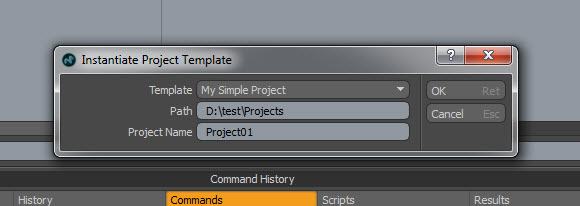

MODO Projects¶
MODO supports configurable project directory structures. A project consists of two parts, a pre-defined template (config file) that defines the directory structure and an index file (.luxproject) which is created at the root of a project heirarchy when a project is created and which contains associations/mappings between MODO’s file dialogs and the last directory that dialog was open at. In the case of newly created project hierarchies, the file dialogs default to a logical directory within the new project as defined by the template for that project. Currently MODO ships with one simple project structure defined in projdirstandard.cfg which can be found in MODO’s resrc directory and ./Snippet:Standard project config
Defining a project structure¶
Project structures are defined in a project template and consist of a directory hierarchy which specifies the physical layout of the project directories on disk with a set of associations that map MODO file dialogs to specific folders within the project and a set of user strings that allow translatable, user friendly names for the directories on disk. Both the directory hierarchy/dialog associations and the directory user strings are defined inside a ProjectTemplates atom in the config file:
1 2 3 4 5 6 7 | <?xml version="1.0" encoding="UTF-8"?>
<configuration>
<atom type="ProjectTemplates">
</atom>
</configuration>
|
The physical directories and dialog associations for the project structure are defined in a “Template” hash inside “ProjectTemplates”
1 2 3 4 5 6 7 8 9 10 11 12 13 14 15 | <?xml version="1.0" encoding="UTF-8"?>
<configuration>
<atom type="ProjectTemplates">
<!-- project directory folder structure -->
<hash type="Template" key="mysimpleproject">
<!-- defines a folder inside the project called 'scenes' and associates scene related dialogs
with it. That includes scene open, scene import, scene save & scene export dialogs -->
<hash type="Path" key="scenes">
<list type="Association">scene</list>
<list type="Association">scene.saveAs</list>
</hash>
</hash>
</atom>
</configuration>
|
While the user strings for the project are defined in a “TemplateInfo” hash
1 2 3 4 5 6 7 8 9 10 11 12 13 14 15 16 | <?xml version="1.0" encoding="UTF-8"?>
<configuration>
<atom type="ProjectTemplates">
<!-- project folder user strings for US Engish -->
<hash type="TemplateInfo" key="mysimpleproject@en_US">
<!-- user string for the project type -->
<atom type="UserName">My Simple Project</atom>
<!-- user string for the "scenes" folder, the string defined in the 'FolderName' atom
will be the name for the directory on disk -->
<hash type="PathInfo" key="scenes">
<atom type="FolderName">Scenes</atom>
</hash>
</atom>
</configuration>
|
Combining the two previous configs to define a very trivial project structure type called “My Simple Project” which has a single pre-defined folder called ‘Scenes’ associated with scene load, save, import and export dialogs:
1 2 3 4 5 6 7 8 9 10 11 12 13 14 15 16 17 18 19 20 21 22 23 24 25 | <?xml version="1.0" encoding="UTF-8"?>
<configuration>
<atom type="ProjectTemplates">
<!-- project directory folder structure -->
<hash type="Template" key="mysimpleproject">
<!-- defines a location inside the project called 'scenes' and associates scene related dialogs
with it. That includes scene open, scene import, scene save & scene export dialogs -->
<hash type="Path" key="scenes">
<list type="Association">scene</list>
<list type="Association">scene.saveAs</list>
</hash>
</hash>
<!-- project folder user strings for US Engish -->
<hash type="TemplateInfo" key="mysimpleproject@en_US">
<!-- user string for the project type -->
<atom type="UserName">My Simple Project</atom>
<!-- user string for the "scenes" folder -->
<hash type="PathInfo" key="scenes">
<atom type="FolderName">Scenes</atom>
</hash>
</atom>
</configuration>
|
It’s possible to define sub-directory heirarchies in the same way. For example, the following config defines a project structure with a ‘renders’ directory containing two sub-directories one for saving frames and one for saving movie files. Note the multiple dialog associations for movie files.
1 2 3 4 5 6 7 8 9 10 11 12 13 14 15 16 17 18 19 20 21 22 23 24 25 26 27 28 29 30 31 32 33 34 35 36 37 38 39 40 41 42 | <?xml version="1.0" encoding="UTF-8"?>
<configuration>
<atom type="ProjectTemplates">
<!-- project directory folder structure -->
<hash type="Template" key="mysimpleproject">
<!-- 'renders' folder definition -->
<hash type="Path" key="renders">
</hash>
<!-- 'renders/frames' folder definition and image save dialog association-->
<hash type="Path" key="renders/frames">
<atom type="Parent">renders</atom>
<list type="Association">image@renderframes</list>
</hash>
<!-- 'renders/movies' folder definition and movie saver dialogs associations-->
<hash type="Path" key="renders/movies">
<atom type="Parent">renders</atom>
<list type="Association">movie@rendermovies</list>
<list type="Association">movie_st@rendermovies</list>
<list type="Association">movie_nost@rendermovies</list>
</hash>
</hash>
<!-- project folder user strings for US Engish -->
<hash type="TemplateInfo" key="mysimpleproject@en_US">
<!-- user string for the project type -->
<atom type="UserName">My Simple Project</atom>
<!-- user string for the "renders" folder -->
<hash type="PathInfo" key="renders">
<atom type="FolderName">Renders</atom>
</hash>
<!-- user string for the "renders/frames" folder -->
<hash type="PathInfo" key="renders/frames">
<atom type="FolderName">Frames</atom>
</hash>
<!-- user string for the "renders/movies" folder -->
<hash type="PathInfo" key="renders/movies">
<atom type="FolderName">Movies</atom>
</hash>
</atom>
</configuration>
|
Neither of the previous examples are particularly useful since they only implement definitions for project types with one or two folders. Have a look at ./Snippet:Standard project config for a complete example.
Dialog association strings¶
To create dialog associations for the directories in your project you’ll need the correct strings to enter in the config file:
: ‘’’Assembly preset dialogs’’’ ::assemblypreset@assemblies:out ::assemblypreset:out ::assemblypreset
:’’’Environment presets’’’ ::environpreset ::environpreset:in ::environpreset:out
:’’’Image load/save dialogs’’’ ::image ::image:in ::image:out ::image@clip:in
:’’’Irradiance caches’’’ ::irrad ::irrad:in ::irrad:out
:’’’Item and material presets’’’ ::itempreset ::itempreset:out ::itempreset@items:out
:’’’Mesh presets’’’ ::meshlayerpreset ::meshlayerpreset:in ::meshlayerpreset:out ::meshlayerpreset@meshes:out
:’’’Rendered frames’’’ ::image@renderframes ::layeredimage@renderframes
:’’’Rendered movies’’’ ::movie@rendermovies ::movie_st@rendermovies - stereo movies ::movie_nost@rendermovies - non-stereo movies
:’’’Scenes’’’ ::scene ::scene:in ::scene.saveAs:out ::scene.saveAs
Script Search Paths¶
In addition to file associations, directories can also be flagged as being script search paths. This is useful for setting up fire-and-forget scripts that are specific to the scene, and the can be launched simply with ‘’@script.py’’, for example. These are defined simply by adding the IsScriptSearchPath atom with a value of 1 under the Path hash.
1 2 3 | <hash type="Path" key="scripts">
<atom type="IsScriptSearchPath">1</atom>
</hash>
|
Known Issues¶
Creating a new scene after selecting a project doesn’t always display the project name in the new scene
“New Project” in the File menu will open a directory dialog to select the location of the project folder. Selecting a folder and clicking ‘OK’ closes the directory dialog and opens MODO’s project dialog to choose the project type and name. Selecting ‘OK’ on the dialog creates an empty project from the selected project template as a directory hierarchy on disk and writes the ‘.luxproject’ project file to the root of the project.
Selecting or changing project¶
“Choose Project” in the File menu allows selecting an existing project for an as-yet-unsaved scene.
Third party project manager utility¶
MODO user Tim Crowson has a utility for managing projects ./http://www.timcrowson.com/modo-project-manager/ here